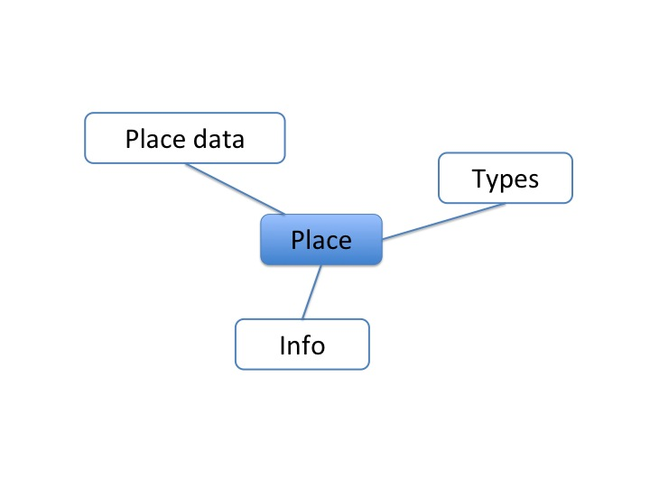

Place¶
To do: kurzer Kommentar dazu
Places can be the location of institutes, persons and maps.
GeoNamesId¶
This field can be used to connect a place to GeoNames identifier.
You can search at GeoNames for corresponding entries for the value of the Name field. If entries are found you can choose one from a list to automatically fill the GeoNamesId field.